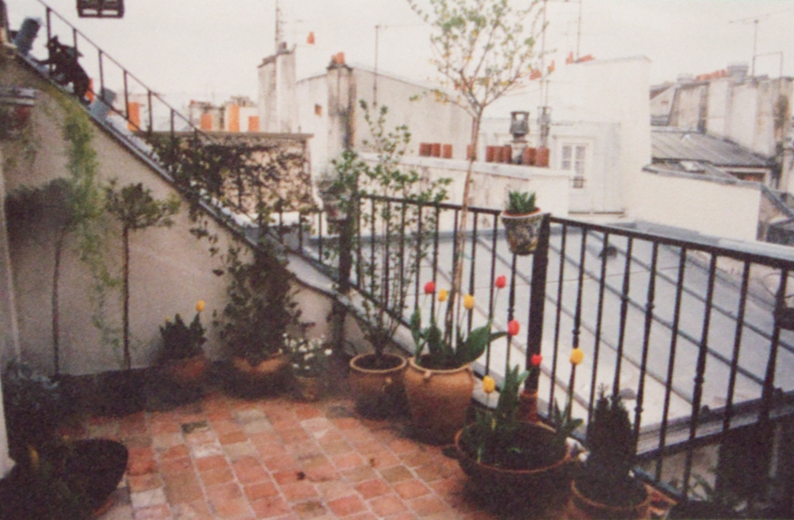

Character: Caitlin (She prefers to be called Cat, however.)
Cat was part of the Equinox Amber PBEM; in that game, the Courts of Chaos were referred to by the name Thelbane (much as Amber is the name of the Courts of Order).
Description
Cat is small (5'3") and compact. She has the muscle tone and grace of the athlete and dancer she is. Her wavy hair is the red-brown of autumn beech leaves and her eyes are hazel-green. She wears her hair long, usually in a plait which hangs to her waist. Her favoured style of dress is easy, fluid designs which allow freedom of movement and her colours are turquoise and sea-green (all shades from sunlit to storm-dark).
She is usually accompanied by a handsome brown Burmese cat named Shen Kuei.
{kind=link}
Here is her trump [© Janet Vialls, 1996] - the scanning (showing up places where reworking affected the surface texture) and compression have not done the original justice. Cat is leaning on a thick oak staff significantly taller than she is. It is beautifully carved with a running garland of oak leaves and acorns. She is looking out of the picture, smiling quizzically, with the practise mirror and barre in her apartment behind her and Shen curled on a cushion near her feet. She is wearing deep sea-green silk karate pyjamas over a paler leotard. Her feet are bare and her heavy plait of red-brown hair hangs over her shoulder.
Thumbnail, and detail from another trump [© Angela Taylor, 1996]. Here the decor, rather than Cat herself, shows her colours.
{kind=link}
Pied à terre
Cat's Paris flat is on the first floor of an old building in a back street near the Luxembourg gardens. It has a moderately sized living room, lined with bookshelves carrying a mix of books, found objects and plants. One wall has a mirror and dancer's practice barre. The floor is wood for the same reason and the furniture is mainly bean-bags, cushions and rugs which can easily be cleared away when Cat wants to practice. Besides Cat, like her namesake, prefers to sprawl.
There is a small kitchen/diner behind the living room, not very often used as Cat tends to eat at the local bar. The bedroom is next to the living room and roughly the same size. It is dominated by a huge antique iron bedstead and another bookcase.The bathroom, also small, is behind the bedroom. The living room has a balcony which is full of plants, with just room for a chair, usually occupied by Shen in fine weather.
The rooms are sunny, with white walls and the soft furnishings reflect Cat's favoured colours, creating an undersea sort of effect.
Here is a view of Cat's balcony and the apartment building.
Episodes
- Prelude to a Pattern Walk
- Cat's Pattern walk
- The Pattern again
- Letter of Resignation from the Parys Cabinet
- The Creation of Mandala
- Cat walks through Shadow to Mandala
- Marching into Ericalunde
- Judgement at the Esquiline Redoubt
The Mrr (or Cat People) Clans
Other background
This document maintained by domain webmaster - webmaster at windsong dot demon dot co dot uk.
Except as noted, all material Copyright © 1996-2003 Karen Gilham